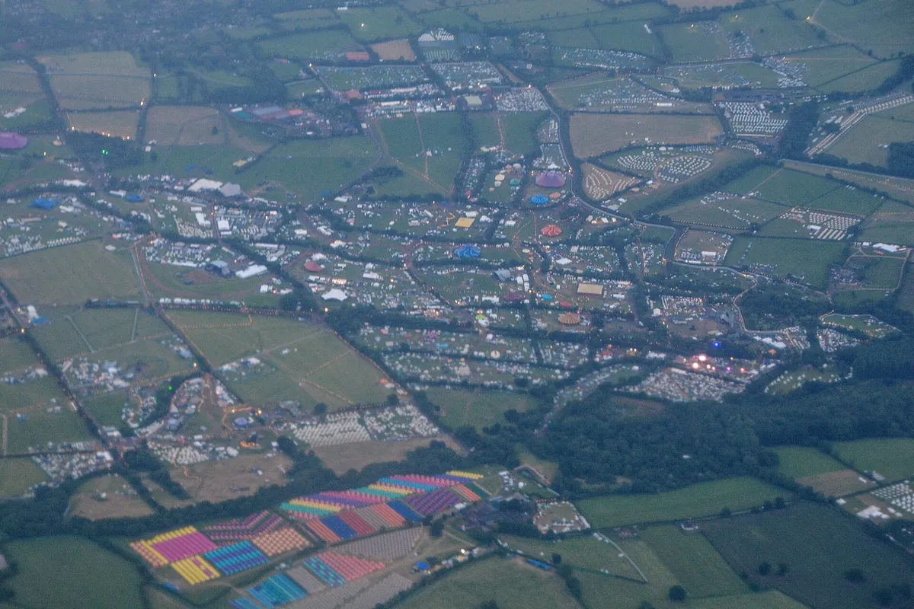
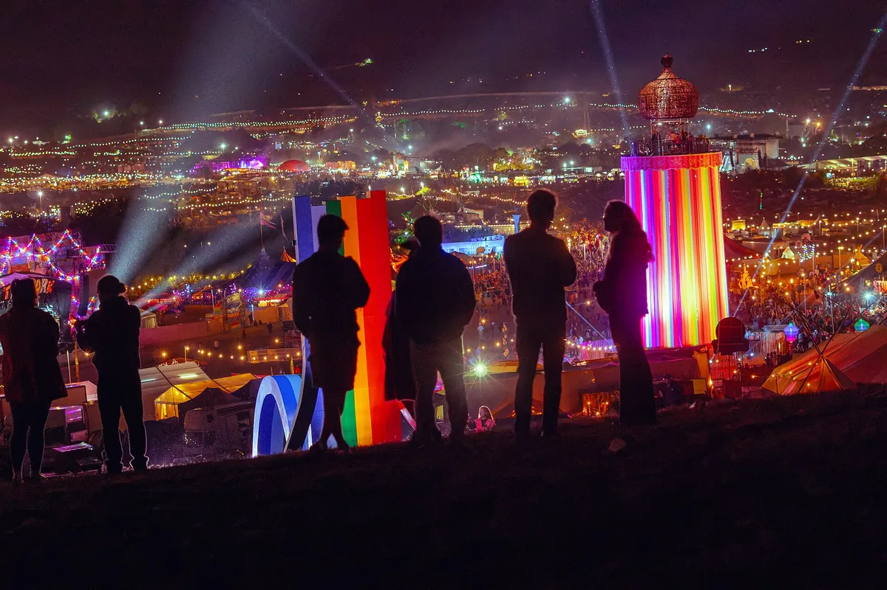
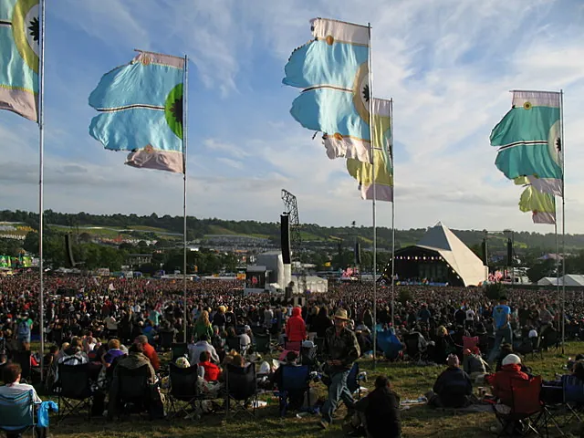

Glastonbury
Glastonbury Festival
Five days most Junes on a dairy farm in Somerset. When the next one is, why there was none this year, where it happens, how big it is, and who has headlined.
A festival on a dairy farm.
Glastonbury began with 1,500 people on a dairy farm. On 19 September 1970 Michael Eavis, who had just seen Led Zeppelin play an open-air festival in Bath, put on his own at Worthy Farm; tickets were £1. It is now regarded as a major event in British culture, and the Glastonbury festival most people mean is a small town of stages, fields and tents that appears in the Somerset countryside for one week in June.
This guide covers when Glastonbury 2027 is and why there was no festival this year, where it is and how long it lasts, how big it is, its history and who runs it, the Pyramid Stage and the rest of the site, the headliners by year, and what the music actually is.
Glastonbury 2027: dates.
Glastonbury 2027 runs from Wednesday 23 to Sunday 27 June 2027, at Worthy Farm. The festival confirmed the Glastonbury 2027 dates on its own site, and set its ticket sales for October 2026: ticket and coach packages from 1 October and general admission from 4 October.
When is the next Glastonbury? That one, in 2027. When is Glastonbury 2027 in the usual calendar? Where it usually is, in the last week of June.
Why there is no Glastonbury this year.
Glastonbury takes fallow years. The fallow year meaning comes from farming: a field left unplanted for a season to recover. Worthy Farm is a working dairy farm, and roughly every five years the festival stays away to give the land, the villages around it and the organisers a break.
The pattern goes back decades: there was no festival in 1988, 1991, 1996, 2001 or 2006, and 2012 was skipped for the London Olympics, which moved the sequence on and made 2018 the next fallow year. The pandemic cancelled 2020 and 2021. During the 2025 festival the Eavis family announced that there would be no festival in 2026, the first planned fallow year in eight years.
So is Glastonbury on this year? Not in 2026. How often is Glastonbury, then? Most summers, with a year off about every fifth year; the Glastonbury fallow years are announced well in advance.
Where Glastonbury Festival is.
Where is Glastonbury? The festival is at Worthy Farm in Somerset, in South West England, between the villages of Pilton and Pylle, six miles east of the town of Glastonbury and overlooked by Glastonbury Tor. The nearest town is Shepton Mallet, three miles to the north-east. The Glastonbury location is the reason for the name, but the festival is not in the town itself.
The farm lies in a valley at the head of the Whitelake River, between two low limestone ridges at the southern edge of the Mendip Hills. That valley floods: the site was badly hit in 1997, 1998 and 2005, and the drainage has been rebuilt since. Extra coaches run to the site from across the country, and festival trains from London run to Castle Cary station, with shuttle buses to the gates.

Where is Glastonbury festival held within the farm? Around a backstage compound, with the Pyramid Stage to the north and the Other Stage to the south, the acoustic, comedy and circus areas to the east, the Green Fields to the south, and the late-night stages in the south-east corner. The Glastonbury festival location has grown beyond Worthy Farm itself: in 1985 the neighbouring Cockmill Farm was bought when the festival outgrew it.
When Glastonbury is, and how long it lasts.
Glastonbury is in late June, over five days from Wednesday to Sunday. The gates open on the Wednesday, the main stages run from Friday to Sunday, and the Glastonbury dates for 2027 are 23 to 27 June.
When does Glastonbury finish? On the Sunday night, when the Pyramid Stage headliner closes the festival; people leave on the Monday. When does Glastonbury end in 2027? On Sunday 27 June.
How big Glastonbury is.
How many people go to Glastonbury? Up to 210,000 people can be on site under the current licence, including ticket holders, staff and performers. That total is not the number of public tickets. The Glastonbury capacity has grown under licence from the local council, which set the first crowd limit at 30,000 in 1983.

Asking how many people attend Glastonbury becomes harder for the years before the modern fence: historical Glastonbury attendance estimates are rough. The Levellers' 1994 Pyramid set is often reported at 300,000, but that is an unverified estimate rather than a counted audience. For 2000, contemporary council reporting put total attendance at about 200,000 against a 105,000 licence, while later accounts commonly cite 250,000. The safety and licensing fallout led to the high-security perimeter introduced in 2002.
How big is Glastonbury Festival on the ground? It covers some 1,500 acres of farmland, with its own water supply from two reservoirs, more than 4,000 toilets and generators providing over 27 megawatts of electricity.
A short history, and who runs Glastonbury.
The first Glastonbury festival was the Pop, Blues & Folk Festival of 19 September 1970, headlined by Tyrannosaurus Rex after the Kinks pulled out. In 1971 came the Glastonbury Fair, with David Bowie on the bill and the first Pyramid Stage, a one-tenth scale copy of the Great Pyramid built from scaffolding and metal sheeting.
From 1981 Eavis ran the festival himself, with the Campaign for Nuclear Disarmament, and it became an annual event apart from its fallow years. It made its first profit that year, and Eavis gave £20,000 of it to CND; since the end of the Cold War the main beneficiaries have been Oxfam, Greenpeace and WaterAid, which supply volunteers and features in return. The Pyramid Stage burned down a week before the 1994 festival and was rebuilt for 2000.
Dance music arrived from the edges. In 1989 unofficial sound systems played acid house around the clock, and in 1994 Orbital's set, broadcast live on Channel 4, made dance music part of the main event; a dance tent followed in 1995 and the Dance Village in 1997.
Who runs Glastonbury? Glastonbury Festival Events Ltd stages the festival, while Glastonbury Festivals Ltd manages the site and infrastructure. Michael and Emily Eavis are directors of the events company. From 2002 to 2012 Festival Republic managed the logistics and security; since then the festival has been independent. Most of the people working on it are volunteers, and most of its profits go to charity.
The Pyramid Stage and the rest of the site.
The Glastonbury Pyramid Stage is the main stage, 25 metres tall, and hosts the festival's three principal headliners. The first pyramid stood on the site in 1971; the 1981 version doubled as a hay barn and cowshed through the winter, and the present Pyramid Stage dates from 2000.

How many stages at Glastonbury? More than 100, by the festival's own count, with more than 4,000 performances. After the Pyramid Stage come the Other Stage and dozens of tents and fields: the Park, opened in 2007; Woodsies, the former John Peel stage, renamed in 2023; the Green Fields and the Stone Circle; and the late-night areas. The Arcadia Glastonbury stage is the most famous of those: a 50-tonne, 15-metre mechanical spider built from recycled military hardware that breathes fire over a DJ, first seen at Glastonbury in 2010 and replaced in 2024 by the Dragonfly, a stage made from a former Royal Navy helicopter.
The site has always been more than its stages: there are theatre, comedy, circus and cabaret fields, and the Green Fields keep the festival's hippie roots, with crafts, healing and a stone circle aligned to the solstice.
Glastonbury headliners by year.
The Glastonbury headliners by year read like a history of British and world pop, rock and dance. The table gives the headliners Wikipedia lists for each festival, and the years there was none.
| Year | Headliners |
|---|---|
| 1970 | Tyrannosaurus Rex (replacing the Kinks) |
| 1971 | David Bowie |
| 1979 | Tim Blake, Peter Gabriel |
| 1981 | Hawkwind, Ginger Baker |
| 1982 | Van Morrison, Jackson Browne |
| 1983 | Curtis Mayfield, UB40 |
| 1984 | The Smiths, Weather Report, Black Uhuru |
| 1985 | Echo & the Bunnymen, Joe Cocker, The Boomtown Rats |
| 1986 | The Cure, The Psychedelic Furs, Level 42 |
| 1987 | Elvis Costello, Van Morrison, The Communards |
| 1988 | Fallow year |
| 1989 | Elvis Costello, Van Morrison, Suzanne Vega |
| 1990 | The Cure, Happy Mondays, Sinéad O'Connor |
| 1991 | Fallow year |
| 1992 | Carter USM, Shakespears Sister, Youssou N'Dour |
| 1993 | The Black Crowes, Christy Moore, Lenny Kravitz |
| 1994 | Levellers, Elvis Costello, Peter Gabriel |
| 1995 | Oasis, Pulp, The Cure |
| 1996 | Fallow year |
| 1997 | Radiohead, The Prodigy, Ash |
| 1998 | Primal Scream, Blur, Pulp |
| 1999 | R.E.M., Manic Street Preachers, Skunk Anansie |
| 2000 | David Bowie, Travis, The Chemical Brothers |
| 2001 | Fallow year |
| 2002 | Coldplay, Rod Stewart, Stereophonics |
| 2003 | R.E.M., Radiohead, Moby |
| 2004 | Paul McCartney, Oasis, Muse |
| 2005 | The White Stripes, Coldplay, Basement Jaxx |
| 2006 | Fallow year |
| 2007 | Arctic Monkeys, The Killers, The Who |
| 2008 | Kings of Leon, Jay-Z, The Verve |
| 2009 | Neil Young, Bruce Springsteen, Blur |
| 2010 | Gorillaz, Muse, Stevie Wonder |
| 2011 | Beyoncé, U2, Coldplay |
| 2012 | Fallow year (the London Olympics) |
| 2013 | Arctic Monkeys, The Rolling Stones, Mumford & Sons |
| 2014 | Arcade Fire, Metallica, Kasabian |
| 2015 | Florence and the Machine, Kanye West, The Who |
| 2016 | Muse, Adele, Coldplay |
| 2017 | Radiohead, Foo Fighters, Ed Sheeran |
| 2018 | Fallow year |
| 2019 | Stormzy, The Killers, The Cure |
| 2020 and 2021 | Cancelled for the pandemic |
| 2022 | Billie Eilish, Paul McCartney, Kendrick Lamar |
| 2023 | Arctic Monkeys, Guns N' Roses, Elton John |
| 2024 | Dua Lipa, Coldplay, SZA |
| 2025 | The 1975, Neil Young, Olivia Rodrigo |
| 2026 | Fallow year |
| 2027 | 23 to 27 June; headliners not yet announced |
Coldplay hold the record, with five headline sets, the fifth in 2024. The Cure have headlined four times, and David Bowie played the 1971 festival and headlined in 2000.
The music
What the music actually is.
Glastonbury is not a genre festival. Its main stage has gone from Tyrannosaurus Rex and David Bowie to Oasis, Radiohead and Coldplay, then to Jay-Z in 2008, Beyoncé in 2011, Stormzy in 2019 and Billie Eilish, the youngest headliner, in 2022. Around the Pyramid Stage are more than 100 stages for everything else: folk, jazz, world music, comedy and theatre.
Dance music has had a steadily bigger place since Orbital in 1994. The Prodigy headlined in 1997 and the Chemical Brothers in 2000, and the late-night areas now run until morning. The Prodigy came back in 2025, and the BBC's clip of "Breathe" from that set has about 3.8 million views.
The festival also plays its own history. A Sunday "legends" slot is kept for older stars, and some of the most remembered sets have come from outside the headline lines: Radiohead in 1997, Orbital in 1994, and the Levellers' record crowd in 1994.
Hearing Glastonbury from home.
The BBC has televised Glastonbury since 1997, when it took over from Channel 4, so most people watch Glastonbury live on the BBC. In 2020, the year of the cancelled 50th anniversary, it broadcast classic sets instead, among them Taylor Swift, Adele, Beyoncé, the Rolling Stones and R.E.M.
The most watched Glastonbury video on BBC Music's YouTube channel is Coldplay playing "Fix You" at the 2024 festival, with about 67 million views. For a whole set, R.E.M. have posted the complete BBC broadcast of their 1999 headline show on their own channel, where it has about 2.2 million views.
Glastonbury is the oldest of the festivals on this site. Our guides also cover Creamfields, the other big English festival, Coachella and Lollapalooza in America, and Tomorrowland. And the Selector plays one full DJ set at random from 62,877, if you would rather not choose.
Glastonbury FAQ.
Is Glastonbury on this year?
Not in 2026, which is a fallow year. The festival returns from Wednesday 23 to Sunday 27 June 2027.
Why is there no Glastonbury this year?
Because 2026 is a fallow year: the festival takes a year off roughly every five years to let the farmland, the local villages and the organisers recover. The Eavis family announced it during the 2025 festival.
When is Glastonbury 2027?
From Wednesday 23 to Sunday 27 June 2027, at Worthy Farm in Somerset.
Where is Glastonbury?
At Worthy Farm, between Pilton and Pylle in Somerset, six miles east of the town of Glastonbury and three miles south-west of Shepton Mallet.
How many people go to Glastonbury?
Up to 210,000 people can be on site under the current licence, including ticket holders, staff and performers. That total is not the number of public tickets.
When does Glastonbury finish?
On the Sunday night, when the last Pyramid Stage headliner plays; the site empties on the Monday. In 2027 that is Sunday 27 June.
Sources.
- Wikipedia: Glastonbury Festival
- Glastonbury Festival: Info
- Glastonbury Festival: Glastonbury 2027 ticket information confirmed
- Somerset Council: Glastonbury Festival licensing and event management
- Somerset Council: Glastonbury Festival 2025 scrutiny report
- Associated Press: Glastonbury 2025, by the numbers
- Glastonbury Festival: Anti-Slavery Statement
- The Guardian: Glastonbury organisers bid for expansion
- The Guardian: From Bowie to Beyoncé, Glastonbury's 50 greatest moments
- Wikipedia: Arcadia Spectacular
- Ingenia: The Arcadia spider, from junk to spectacle
- Wallpaper: The story behind Arcadia's new Dragonfly stage
Continue reading
Read next.
 A15Guide / Tomorrowland / ~10 min
A15Guide / Tomorrowland / ~10 minTomorrowland Festival: Where It Is, How Big, and the Music
A park in Boom, Belgium, that most of the world knows through a livestream: where Tomorrowland happens, how big it is, who owns it, and what plays off the Mainstage.
Read article → A16Guide / EDC Las Vegas / ~12 min
A16Guide / EDC Las Vegas / ~12 minEDC Las Vegas: What It Is, How Big, and the Music
Electric Daisy Carnival at the Las Vegas Motor Speedway: where EDC happens, how half a million people a year grew out of a field in Chino, and what plays past kineticFIELD.
Read article → A17Guide / Creamfields / ~11 min
A17Guide / Creamfields / ~11 minCreamfields Festival: Where It Is, How It Grew, the Music
Four days on the Daresbury estate every August bank holiday: where Creamfields happens, how a Liverpool house night grew into it, who owns it, and what plays beyond the Arc Stage.
Read article → A18Guide / Parookaville / ~11 min
A18Guide / Parookaville / ~11 minParookaville Festival: Where It Is, Who Runs It, the Music
A festival staged as a city on an old RAF airbase at Weeze: where Parookaville happens, how three friends built it, how many people go, who runs it, and what plays there.
Read article →